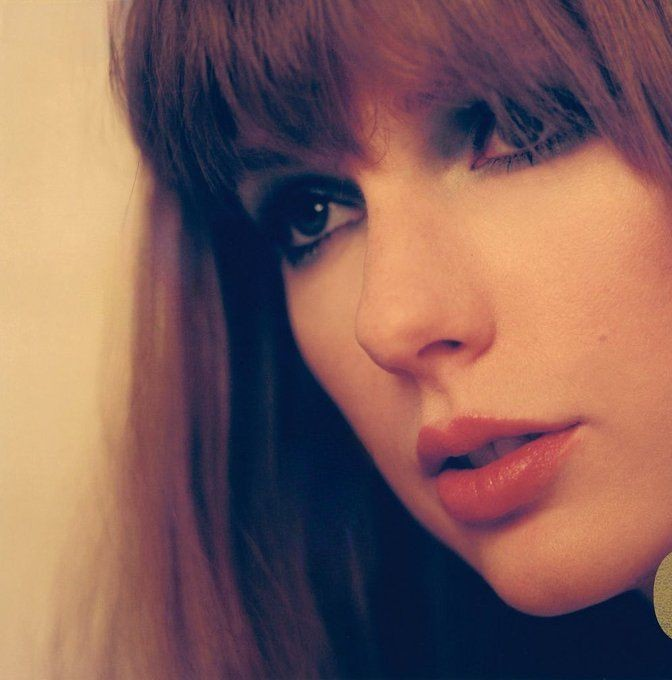
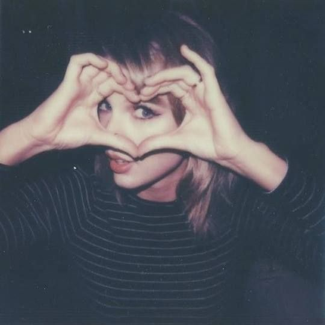
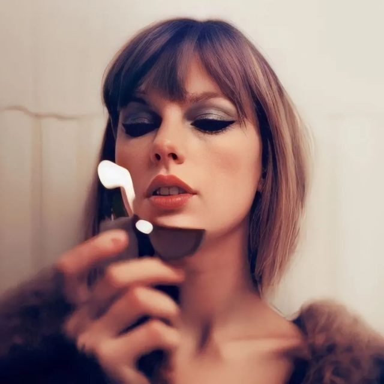

 
En este apartado voy a dejarte una lista con mis 15 canciones preferidas de Taylor
All Too Well 10 Minute Version
Getaway Car
Cardigan
Wildest Dreams
Lover
Love Story
Exile
You Belong With Me
Style
You're On Your Own, Kid
Don´t Blame Me
The Great War
Delicate
I Bed You Think About Me
Back To December